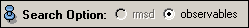
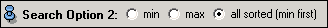

Ports
Search Option

Search Option 2

Alignment


The three ports above specify how the molecules are transformed before computing the rmsd value. See the description in the general section on alignment of molecules for a detailed explanation.
Sorted Timesteps
This slider allows you to step through the time steps after sorting. Time step 0 is that having the minimal value.